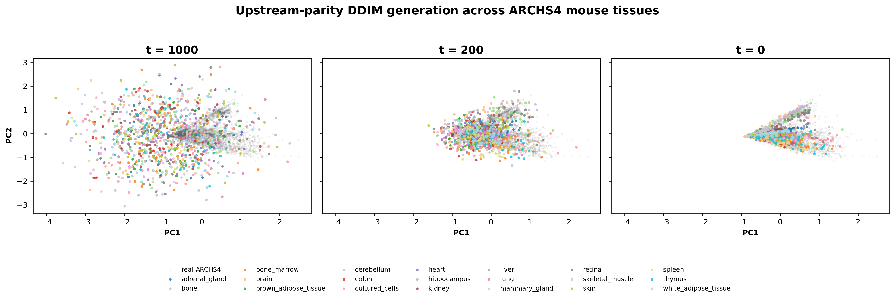
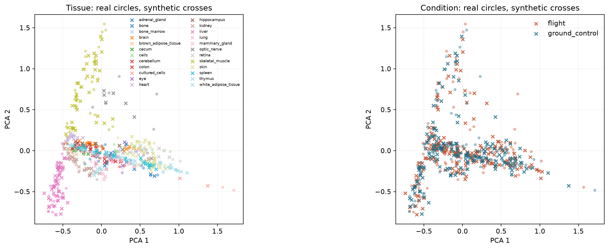
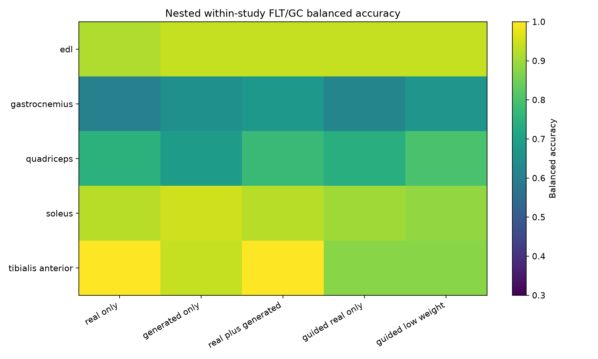
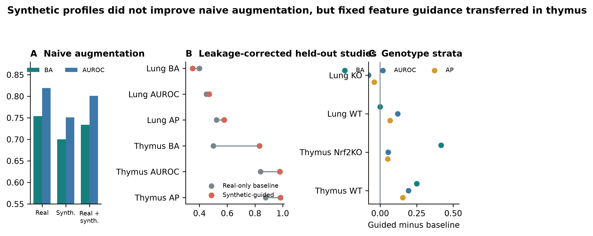

Cross-study synthetic-guided transcriptomics in spaceflown mice
Frozen analysis supplement. This document records exact data roles, architecture, evaluation gates, statistical safeguards, output locations, and rebuild commands. It does not rerun training.
The manuscript builder consumes completed outputs and fails when a required file or a key expected result is missing. It does not:
The exact frozen inputs and SHA-256 hashes are in
source_data/frozen_input_manifest.tsv. Figure hashes are in
source_data/figure_build_manifest.tsv.
OSDR data were obtained through the Biological Data API documented at
https://visualization.osdr.nasa.gov/biodata/api/. The repository implementation
and endpoint notes are in docs/osdr_api.md.
Eligibility required:
Mus musculus;No raw combined OSDR HDF5 file was used. The API audit outputs are:
outputs/generative_benchmark/data_audit/osdr/osdr_canonical_metadata.tsv
outputs/generative_benchmark/data_audit/osdr/osdr_inventory_summary.json
outputs/generative_benchmark/data_audit/osdr/osdr_tissue_alias_audit.tsv
outputs/generative_benchmark/data_audit/osdr/osdr_tissue_inventory.tsv
The API returned 1,631 profile rows. Twenty-one technical replicates were aggregated, leaving 1,610 biological profiles, 835 flight and 775 ground control, from 75 accessions and 24 canonical material classes.
The source file was assets/archs4/mouse_gene_v2.5.h5, containing 997,515
profiles and 53,511 genes. The complete audit files are:
outputs/generative_benchmark/data_audit/archs4/archs4_full_profile_audit.tsv.gz
outputs/generative_benchmark/data_audit/archs4/archs4_control_only_balanced.tsv.gz
outputs/generative_benchmark/data_audit/archs4/archs4_healthy_preferred_balanced.tsv.gz
outputs/generative_benchmark/data_audit/archs4/archs4_broad_balanced.tsv.gz
The three eligible reference cohorts contained:
| Cohort | Profiles | GEO series | Intended use |
|---|---|---|---|
| Control only | 23,614 | 3,213 | Conservative sensitivity cohort |
| Healthy preferred | 62,299 | 5,307 | Primary pretraining source |
| Broad | 134,250 | 15,111 | Diversity sensitivity cohort |
Before reference selection, nine GEO series linked to eligible OSDR accessions were excluded by accession metadata. This removed 108 otherwise eligible ARCHS4 profiles, including all 53 selected profiles from GSE152382 (OSD-457). The paper-parity run then selected 17,244 healthy-preferred profiles across 20 tissue classes. Complete GEO-series grouping assigned 10,150 profiles to training, 2,466 to validation, and 4,628 to test, with no series shared across splits.
The exclusion list and overlap audit are:
data/diffusion/osdr_archs4_overlap_exclusions.tsv
docs/diffusion_leak_free_confirmation.md
Full-transcriptome TPM was calculated with
data/reference/gencode_vM39_mouse_gene_lengths.tsv. Landmark selection occurred
after TPM calculation. The deterministic 974-gene panel and the human-to-mouse
mapping audit are:
data/diffusion/l974_mouse_paper_parity.tsv
data/diffusion/l1000_human_to_mouse_ensembl.tsv
Training-set MaxAbs scaling was applied after landmark selection. The ARCHS4 prepared matrix is:
outputs/generative_benchmark/data/lacan_diffusion/archs4_mouse_paper_parity_osdr_disjoint_l974.h5
The OSDR factorized matrix and profile metadata are:
outputs/generative_benchmark/data/lacan_diffusion/osdr_factorized_within_study_replicated_validation_l974.h5
outputs/generative_benchmark/data/lacan_diffusion/osdr_factorized_within_study_replicated_validation_l974.samples.tsv.gz
The full configuration is
configs/rna_diffusion/archs4_mouse_paper_parity_osdr_disjoint.yaml. The neural
architecture and optimizer settings match the paper-parity implementation; only
the reference exclusion and grouped split contract changed.
| Component | Value |
|---|---|
| Input genes | 974 |
| Hidden layers | 8,192; 8,192 |
| Parameters | 227,109,786 |
| Dropout | 0.1 |
| Diffusion steps | 1,000 |
| Beta schedule | Quadratic, 0.0001 to 0.02 |
| Objective | Summed noise MSE |
| Optimizer | Adam |
| Learning rate | 0.0004783833151836702 |
| Scheduler | OneCycle |
| Batch size | 2,048 |
| Epochs / optimizer steps | 15,000 / 75,000 |
| AMP | Enabled |
| EMA | 0.999 |
| Device | NVIDIA A100-SXM4-40GB |
| Runtime | 6,083 seconds |
| Peak allocated GPU memory | 5.93 GB |
Run directory:
outputs/generative_benchmark/runs/lacan_diffusion/archs4_mouse_paper_parity_osdr_disjoint_seed1234/
The accepted configuration is
configs/rna_diffusion/osdr_factorized_study_lora512_correlation_refine.yaml.
This broad adaptation and the all-tissue development screens preceded the
cross-resource overlap audit. They are retained for hypothesis generation and
for the real-data BH-FDR analyses, but they do not supply Tier 1 evidence. The
corrected lung/thymus adaptation is described in Section S10.
| Component | Value |
|---|---|
| Backbone | Completed ARCHS4 paper-parity DDIM |
| Conditioning | Tissue, FLT/GC, accession, material type |
| Domain adapter | LoRA rank 512, alpha 512 |
| Domain stage | 4,000 steps, LR 0.00002 |
| Condition stage | 1,000 steps, LR 0.00002 |
| Batch size | 512 |
| Condition dropout | 0.15 |
| Correlation regularization | Weight 10, 256 genes, timestep <= 200 |
| Sampling | 100 DDIM steps for evaluation |
The data split contained 781 training, 536 validation, and 293 locked-test profiles. Every test accession was represented in training. Results therefore measure within-study interpolation.
The accepted calibrator used:
Run directory:
outputs/generative_benchmark/runs/lacan_diffusion/osdr_factorized_study_lora512_correlation_refine_seed2020/
Four generation seeds, 5020-5023, were declared before the locked test was opened. Every metric was gated independently.
| Metric | Gate |
|---|---|
| Gene-correlation agreement | At least min(0.98, real-bootstrap P05) |
| Precision | >= 0.95 |
| Recall | >= 0.85 |
| F1 | >= 0.90 |
| Adversarial accuracy | 0.40 to 0.60 |
| FD / real-split P95 | <= 1.0 |
| Pooled effect recovery | Correlation >= 0.30 and direction >= 0.55 |
| Muscle accession recovery | Correlation >= 0.30 and direction >= 0.55 |
| Memorization | Generated fraction below train LOO P01 <= 0.05 |
The exact repeat rows are in source_data/table_s2_locked_ddim_repeats.tsv.
The term "adversarial accuracy" refers to an external nearest-neighbor real-versus-synthetic classifier, not the WGAN training critic. A result near 0.5 indicates that this external discriminator cannot reliably separate the two cohorts.
The WGAN used the Viñas et al. topology: 64-dimensional noise, two 256-unit generator and critic layers, five critic updates, gradient-penalty weight 10, RMSProp learning rate 0.0005, and batch size 32. The strongest study-conditioned validation result had external adversarial accuracy 0.6362. Because no calibration variant jointly fixed adversarial accuracy and retained the correlation floor, and because accession-aware FLT/GC recovery failed, its locked test remained unopened.
outputs/generative_benchmark/runs/vinas_wgan_gp/osdr_matched_study_conditioned_seed2020/
The exact-architecture GeneJEPA duration screen used 4,096 genes and 43,744 replacement-sampled training exposures. It reached 0.703 held-out tissue balanced accuracy versus 0.839 from expression. It is representation-only and has no expression decoder.
outputs/generative_benchmark/runs/genejepa/matrix_phase_0_genejepa_exact_mouse_one_epoch_f2e01cf1f130d5cb/
Five arms were compared:
real_only;generated_only;real_plus_generated, equal total real and synthetic weight;guided_real_only, real classifier with real/synthetic consensus ranking;guided_low_weight, real plus recentered synthetic profiles at 0.05 total
synthetic weight.Splits were nested within accession-by-condition strata. The inner loop selected feature count, regularization, and rank method. The outer loop measured balanced accuracy, AUROC, and average precision separately. No composite score was used.
Stable genes had selection frequency at least 0.50 and coefficient-sign agreement at least 0.75. Generated-supported status did not constitute biological evidence. Real random-effects and LOO tests were applied afterward.
For the BH-FDR synthetic-informed subset, reinforced denotes a
core_intersection gene that was stable in both the real-only and selected
synthetic-guided arms, had matching coefficient directions, and had a supporting
real meta-effect. Synthetic-promoted denotes a generated_supported gene that
was stable in the selected synthetic-guided arm but did not cross the real-only
stability threshold, with a supporting real meta-effect. Thus
synthetic-promoted is a feature-selection classification, not a claim that the
gene was absent from real expression, statistically nonsignificant in real data,
or biologically novel.
Primary workflow documentation:
docs/generated_feature_guidance_workflow.md
The confirmation protocol is frozen at:
outputs/generative_benchmark/analyses/generated_feature_guidance_confirmation_disjoint_v1/protocol.md
Test accessions:
| Tissue | Accession | Profiles | FLT | GC |
|---|---|---|---|---|
| Lung | OSD-900 | 20 | 10 | 10 |
| Thymus | OSD-457 | 24 | 12 | 12 |
Both accessions were removed from all OSDR generator-adaptation roles. A post-analysis audit found that the original ARCHS4 reference included GEO series linked to OSDR, including GSE152382 from OSD-457. Three exact OSD-457 thymus profiles had been assigned to the original ARCHS4 training split. That overlap invalidated the original fully unseen wording.
For the corrected analysis, all nine OSDR-linked GEO series were excluded before reference selection, the 15,000-epoch ARCHS4 backbone was trained from scratch, and the 5,000-epoch OSDR adaptation and fixed feature-guidance protocol were rerun. OSD-464 lung and OSD-244 thymus remained fixed validation studies. Because the original outcomes had already been observed before this correction, this is a leakage-corrected retrospective sensitivity analysis, not a pristine prospective confirmation.
The deployed thymus classifier used real profiles only. Synthetic data changed feature ranking. The deployed lung classifier used a recentered synthetic view at 0.05 total sample weight during policy evaluation, but failed the prespecified inner gate; the deployed lung result therefore reverted to the real-only baseline.
| Tissue | Baseline BA | Guided BA | Baseline AUROC | Guided AUROC | Baseline AP | Guided AP |
|---|---|---|---|---|---|---|
| Lung, OSD-900 | 0.400 | 0.350 | 0.450 | 0.470 | 0.523 | 0.578 |
| Thymus, OSD-457 | 0.500 | 0.833 | 0.840 | 0.979 | 0.876 | 0.983 |
Genotype assignment was audited after the primary result:
| Tissue | Stratum | Profiles | FLT | GC |
|---|---|---|---|---|
| Lung | KO | 10 | 5 | 5 |
| Lung | WT | 10 | 5 | 5 |
| Thymus | Nrf2KO | 12 | 6 | 6 |
| Thymus | WT | 12 | 6 | 6 |
Tier 1 asks whether a frozen synthetic-guided policy transfers to an OSDR accession excluded from adaptation and feature-policy development after OSDR-linked GEO series are also removed from ARCHS4. It is leakage-corrected but retrospective because the earlier overlapping run exposed the outcomes. Tier 2 asks which BH-significant real effects also cross repeated synthetic-informed selection thresholds within the development domain. Tier 3 is the complete real-data random-effects BH-FDR screen, regardless of feature-selection status. These tiers answer different questions and are not alternative statistical filters on one gene list.
All eight Tier 1 thymus genes were FLT-lower in both OSD-457 genotype strata and had FLT-lower cross-study meta-effects with BH FDR < 0.05. Their separate Tier 2 labels were:
| Gene | OSD-457 result | Tier 2 selection label | Cross-study BH FDR |
|---|---|---|---|
Birc5 |
FLT lower in WT and Nrf2KO | Not selection-stable | 1.26e-7 |
Cdk1 |
FLT lower in WT and Nrf2KO | Synthetic-promoted | 4.83e-7 |
Ccnb2 |
FLT lower in WT and Nrf2KO | Synthetic-promoted | 2.38e-4 |
Nusap1 |
FLT lower in WT and Nrf2KO | Synthetic-promoted | 1.16e-9 |
Ccnb1 |
FLT lower in WT and Nrf2KO | Synthetic-promoted | 3.40e-10 |
Gmnn |
FLT lower in WT and Nrf2KO | Reinforced | 0.0227 |
Ccne2 |
FLT lower in WT and Nrf2KO | Synthetic-promoted | 0.00172 |
Ube2c |
FLT lower in WT and Nrf2KO | Real-only selected | 0.0102 |
This mapping is frozen in Supplementary Table S19. The Tier 1 conclusion is that synthetic guidance assembled a coherent, transferable cell-cycle panel from real-supported genes. The Tier 2 labels describe thresholded selection behavior and should not be interpreted as eight independent novelty claims.
The all-tissue development screens were not rerun with the corrected backbone. Their synthetic-promoted and reinforced labels remain exploratory. Their random-effects BH-FDR values were calculated only from real OSDR profiles and are unaffected by the generator overlap correction.
For gene (g) in accession (a), the real flight effect was:
delta[g,a] = mean(real expression[g] | FLT,a)
- mean(real expression[g] | GC,a)
Accession effects were combined with a random-effects model. Within each tissue, Benjamini-Hochberg (BH) adjustment was applied to the 974 gene-level meta-analysis P values. BH sorts the P values and controls the expected proportion of false discoveries among the rejected hypotheses. The primary inclusion rule was BH FDR < 0.05; synthetic selection, study-direction agreement, heterogeneity, and LOO stability were not additional significance gates.
After BH correction, each association was annotated as:
The accession-direction fraction, random-effects variance (tau2), heterogeneity
(I2), and exact study counts remain in the complete inventory. A gene with mixed
study directions remains BH-significant when its pooled random-effects test passes,
but the disagreement qualifies interpretation of the pooled effect.
The LOO analysis removed each accession, repeated the random-effects fit, and retained the maximum FDR and any sign reversal. LOO was treated as a sensitivity label rather than an inclusion requirement. A LOO-stable gene additionally required maximum LOO FDR < 0.05 and no LOO sign reversal. Failure of this label does not remove a gene from the primary BH-FDR table.
Generated profiles were never included in the random-effects model.
The official mouse GMT is:
data/pathways/reactome_current_mouse_ensembl.gmt
It was generated from official ReactomePathways.txt and
Ensembl2Reactome_All_Levels.txt, restricted to Mus musculus, R-MMU-*
pathways, and ENSMUSG* genes.
Hypergeometric enrichment used the 974-gene landmark panel as background. Benjamini-Hochberg FDR was applied separately by tissue and selected-gene set. Reactome parent and child terms overlap. Counts of significant rows are therefore not counts of independent biological discoveries.
The fixed DDIM and three frozen synthetic development views were reused. No neural network was retrained.
| Group | Profiles | Accessions | FLT | GC |
|---|---|---|---|---|
| EDL | 24 | 2 | 12 | 12 |
| Gastrocnemius | 25 | 3 | 10 | 15 |
| Quadriceps | 35 | 4 | 18 | 17 |
| Soleus | 41 | 3 | 22 | 19 |
| Tibialis anterior | 24 | 2 | 12 | 12 |
The full report is docs/synthetic_skeletal_muscle_group_analysis.md. Key frozen
outputs are:
outputs/generative_benchmark/analyses/within_study_generated_feature_stability_muscle_groups_v1/
The BH-FDR soleus set contains eight synthetic-informed genes with the same
direction in all three accessions: Bdh1, Bnip3, Mef2c, Ech1, Pxmp2,
Gmnn, Decr1, and Tpm1. Seven also pass the LOO sensitivity criterion;
Decr1 does not.
LOO here is a real-data meta-analysis sensitivity test. It does not remove the accession from the already completed generator adaptation. Soleus remains developmental until a new accession is excluded from adaptation and selection.
Igfbp3 follow-upThe all-tissue screen selected Igfbp3 (ENSMUSG00000020427) through the
generated-informed spleen arm. The subsequent biological follow-up used real
samples only. Flight-minus-ground effects were positive in OSD-164, OSD-246,
OSD-288, OSD-420, OSD-457, and OSD-506. The random-effects FDR was
1.76e-09, and the maximum FDR across the six leave-one-accession-out analyses
was 0.00385.
A separate TPM calculation from the API-derived full-transcriptome count matrix found flight/ground-control mean ratios of 1.09 to 1.63 across the six studies. These ratios are descriptive; the accession-aware random-effects analysis is the formal statistical result.
Normal spleen source localization was performed after gene discovery:
Igfbp3 expression in
white-pulp mesenchymal cells, followed by red-pulp mesenchymal cells.These source-localization analyses are post hoc and do not constitute an
independent flight replication. The defensible hypothesis is that whole-spleen
Igfbp3 elevation reflects altered stromal expression, altered stromal abundance
or architecture, or both. The full audit and reproduction notes are in
docs/spleen_igfbp3_handoff.md.
Supplementary Table S17 is the primary statistical inventory. It contains every real-data random-effects association with BH FDR < 0.05, without requiring synthetic selection, unanimous study direction, or LOO stability. Supplementary Table S18 reports the corresponding counts for every tested analysis unit, including tissues with zero BH-FDR genes.
The 459 retained tissue-gene results comprise 202 associations across 10 of 22 canonical tissues and 257 across all five anatomical muscle groups. This is an inventory size, not a count of independent discoveries: genes can recur across tissues, and pooled skeletal muscle overlaps the anatomical subgroup analyses. Of these results, 363 had the same effect direction in every represented accession and 96 did not. Direction agreement is reported as an annotation, not an exclusion rule.
| Analysis unit | BH-FDR genes | FLT higher | FLT lower | Unanimous direction | Synthetic-promoted | Reinforced |
|---|---|---|---|---|---|---|
| Adrenal gland | 22 | 1 | 21 | 21 | 3 | 1 |
| Eye | 8 | 4 | 4 | 8 | 0 | 1 |
| Heart | 4 | 2 | 2 | 4 | 0 | 0 |
| Kidney | 3 | 3 | 0 | 1 | 0 | 1 |
| Liver | 19 | 8 | 11 | 0 | 0 | 0 |
| Retina | 5 | 5 | 0 | 5 | 1 | 0 |
| Skeletal muscle, pooled | 26 | 12 | 14 | 5 | 1 | 6 |
| Skin | 3 | 2 | 1 | 1 | 0 | 0 |
| Spleen | 34 | 32 | 2 | 21 | 4 | 2 |
| Thymus | 78 | 37 | 41 | 57 | 9 | 1 |
| EDL | 136 | 14 | 122 | 130 | 2 | 2 |
| Gastrocnemius | 15 | 8 | 7 | 13 | 1 | 0 |
| Quadriceps | 29 | 25 | 4 | 22 | 3 | 1 |
| Soleus | 29 | 5 | 24 | 27 | 2 | 6 |
| Tibialis anterior | 48 | 42 | 6 | 48 | 2 | 3 |
Supplementary Table S16 is the 52-row synthetic-informed subset of the primary inventory: 28 synthetic-promoted and 24 reinforced tissue-gene results whose real and generated effects agree. It is retained to attribute what the generator added, but it is not the primary significance table. The full inventory additionally contains 32 real-only selected results, 373 BH-significant results not stably selected by either arm, and two synthetic-selected results without real-direction agreement.
The complete Tier 2 genes are shown below. FLT higher and FLT lower refer to
the sign of the real random-effects meta-estimate. An asterisk marks a
BH-significant pooled effect whose direction was not identical in every
accession.
Synthetic-promoted Tier 2 genes
| Analysis unit | FLT higher | FLT lower |
|---|---|---|
| Adrenal gland | — | Psmb8, Ticam1, Pmaip1 |
| Retina | Slc37a4 |
— |
| Skeletal muscle, pooled | — | H2az2* |
| Spleen | Igfbp3, Rai14, Ptprk |
Snca* |
| Thymus | Mok* |
Cenpe, Ccnb1, Nusap1, Stmn1, Cdk1, Top2a, Ccnb2, Ccne2 |
| EDL | — | Polr2i, Tsc22d3 |
| Gastrocnemius | Cxcr4 |
— |
| Quadriceps | Cebpd, Rbm6, Sh3bp5 |
— |
| Soleus | — | Pxmp2, Mef2c |
| Tibialis anterior | Cebpd, Pdhx |
— |
Reinforced Tier 2 genes
| Analysis unit | FLT higher | FLT lower |
|---|---|---|
| Adrenal gland | — | Tspan4 |
| Eye | — | Klhl21 |
| Kidney | Slc37a4 |
— |
| Skeletal muscle, pooled | Cebpd*, Sh3bp5, Prkcd, Arid5b*, Sesn1*, Tle1* |
— |
| Spleen | Bace2, Loxl1 |
— |
| Thymus | — | Gmnn |
| EDL | — | Abcc5, Lsm6 |
| Quadriceps | Gpatch8 |
— |
| Soleus | Tpm1 |
Bdh1, Ech1, Bnip3, Gmnn, Decr1 |
| Tibialis anterior | Cdkn1a, St3gal5, Bnip3 |
— |
Heart, liver, and skin had Tier 3 BH-FDR genes but no aligned Tier 2 synthetic-informed gene. Bone, bone marrow, brain, brown adipose tissue, cecum, cerebellum, colon, hippocampus, lung, mammary gland, optic nerve, and white adipose tissue had no Tier 3 BH-FDR gene in the 974-gene panel.
The pooled skeletal-muscle results remain auditable in Tables S17-S18 but are not used for organ-level interpretation because anatomical groups have different responses. Liver and skin illustrate why the two inventories must remain separate: liver has 19 and skin has three real-data BH-FDR associations, but neither tissue has an aligned synthetic-informed BH-FDR result. Lung has no BH-FDR gene in the 974-gene panel.

Figure S1. ARCHS4 DDIM denoising trajectory. The same generated profiles are shown at diffusion timesteps 1,000, 200, and 0 in a PCA space fitted to real ARCHS4 expression. Colors identify tissue classes. The two-dimensional view is descriptive; held-out tissue classification uses the full 974-gene representation.

Figure S2. Real and generated profiles in the locked OSDR test. Seed 5020 is shown. Tissue and condition views are descriptive; formal fidelity and effect metrics use all declared seeds and higher-dimensional data.

Figure S3. Repeated nested muscle-group balanced accuracy. Each row is a muscle group and each column is a downstream use of real or generated profiles. Arm selection also required nonworse AUROC and average precision.
Figure S4. Generator validation. (A) Tissue balanced accuracy when a classifier was trained on held-out ARCHS4 real or synthetic profiles. (B) Broad-reference distribution metrics. The dashed line marks the strict correlation target. (C) Four OSDR locked-test generations; vertical marks show metric gates. (D) External adversarial accuracy and pooled or accession-aware flight-effect recovery. The shaded interval is the accepted adversarial-accuracy range.

Figure S5. Downstream utility of generated expression. (A) Direct pooled augmentation on the locked real test. (B) Fixed synthetic-guided policies in leakage-corrected, OSDR-held-out lung and thymus accessions. (C) Guided-minus-baseline metric changes after post-hoc genotype stratification. Thymus improved uniformly; lung knockout AUROC declined.
table_1_data_inventory.tsvtable_2_model_screen.tsvtable_3_locked_ddim_metrics.tsvtable_4_leakage_corrected_confirmation.tsvtable_5_tissue_evidence.tsvtable_s1_archs4_ddim_metrics.tsvtable_s2_locked_ddim_repeats.tsvtable_s3_naive_augmentation.tsvtable_s4_confirmation_genotypes.tsvtable_s5_thymus_core_genes.tsvtable_s6_thymus_reactome.tsvtable_s7_muscle_group_summary.tsvtable_s8_soleus_genes.tsvtable_s9_muscle_reactome.tsvtable_s10_all_tissue_development_screen.tsvtable_s11_spleen_igfbp3_accession_effects.tsvtable_s12_spleen_igfbp3_random_effects.tsvtable_s13_spleen_reference_expression.tsvtable_s14_quadriceps_rbm6_accession_effects.tsvtable_s15_quadriceps_rbm6_random_effects.tsvtable_s16_ordinary_fdr_directional_genes.tsvtable_s17_all_random_effects_bh_fdr_genes.tsvtable_s18_bh_fdr_tissue_summary.tsvtable_s19_thymus_evidence_level_mapping.tsvPYTHONPATH=src /home/exouser/miniforge3/envs/nasa-mouse/bin/python \
-m nasa_mouse_rna_diffusion.build_synthetic_guided_paper
To regenerate source tables and figures without rendering PDFs:
PYTHONPATH=src /home/exouser/miniforge3/envs/nasa-mouse/bin/python \
-m nasa_mouse_rna_diffusion.build_synthetic_guided_paper --skip-render